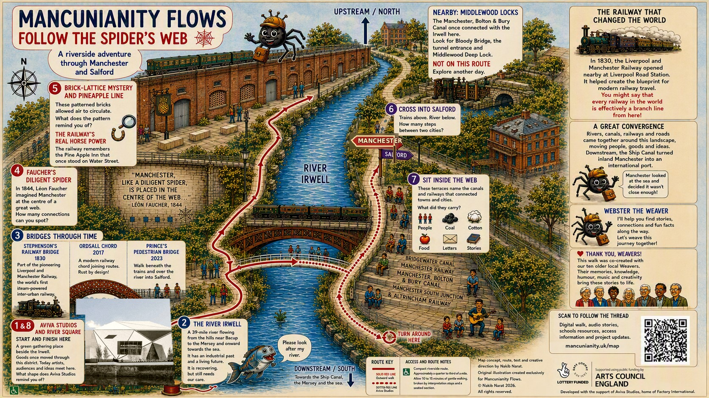

A preview of the real walk
Walk the Spider’s Web
Follow the route along the River Irwell stop by stop, from Aviva Studios, across the water into Salford and back again. Press Play the walk and turn the music on.

Read the whole walk as text
-
Follow the Spider’s Web
A riverside adventure through Manchester and Salford
Meet Webster the Weaver, your spider guide: “I’ll help you find stories, connections and fun facts along the way. Let’s weave this journey together!”
The real walk is a gentle quarter mile with Aviva Studios at the start and finish. Ready? Press Next, or Play the walk to be guided.
-
Aviva Studios and River Square
Start and finish here
A green gathering place beside the Irwell. Goods once moved through this district. Today artists, audiences and ideas meet here.
What shape does Aviva Studios remind you of?
-
The River Irwell
The river that ties it all together
A 39-mile river flowing from the hills near Bacup to the Mersey and onward towards the sea. It has an industrial past and a living future. It is recovering, but still needs our care.
“Please look after my river,” says the fish.
-
Bridges through time
1830, 2017 and 2023
Stephenson’s Railway Bridge, 1830. Part of the pioneering Liverpool and Manchester Railway, the world’s first steam-powered inter-urban railway.
Ordsall Chord, 2017. A modern railway chord joining routes. Rust by design!
Prince’s Pedestrian Bridge, 2023. Walk beneath the trains and over the river into Salford.
-
Faucher’s diligent spider
“Manchester, like a diligent spider, is placed in the centre of the web…” — Léon Faucher, 1844
In 1844, Léon Faucher imagined Manchester at the centre of a great web.
How many connections can you spot?
-
Brick-lattice mystery and pineapple line
The railway’s real horse power
These patterned bricks allowed air to circulate. The railway remembers the Pine Apple Inn that once stood on Water Street.
What does the pattern remind you of?
-
Cross into Salford
Manchester one way, Salford the other
Trains above. River below.
How many steps between two cities?
-
Sit inside the web
The terraces beside the river
These terraces name the canals and railways that connected towns and cities: Bridgewater Canal, Manchester Railway, Manchester, Bolton & Bury Canal, and Manchester South Junction & Altrincham Railway.
What did they carry? People, coal, cotton, food, letters, stories.
-
Turn around here
Back to where it began
Follow the thread back along the river to Aviva Studios, the start and finish of the walk. Inside there are toilets, refreshments and a warm, dry space.
-
You’ve followed the web
Now walk it for real
The live audio-theatre walk runs on 19, 20 and 21 December 2026, with a seated musical finale beside the Irwell. Singing is optional, and everyone is welcome.